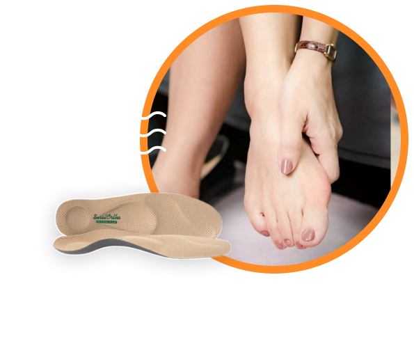
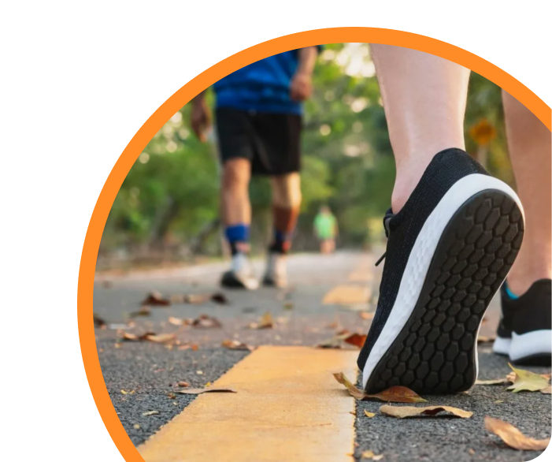
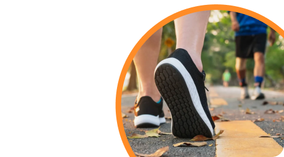
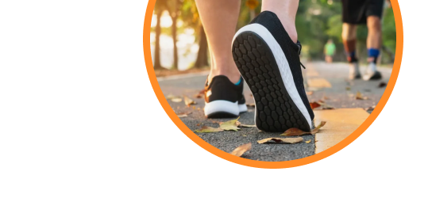

Методика восстановления
и поддержания функций стопы
Научно-производственный центр «Сурсил-Орто» представляет
Когда больно ходить
Когда утомляемость приходит в первые минуты прогулки
Когда стопа деформируется день за днем
Методика НПЦ Сурсил-Орто снимет боль и вернёт стопам здоровье
Что такое Методика
восстановления и поддержания функции стопы
НПЦ Сурсил-Орто?
Методика НПЦ Сурсил-Орто – это 3 условия приведения стопы в физиологическую норму
Видео от эксперта
НПЦ Сурсил-Орто
Узнайте всё о методике за 5 минут
давайте разберемся подробнее с каждым условием
Условие №1 - Разгрузка стопы
Разгрузка стопы
Самым быстрым способом разгрузить стопу и снять болевые ощущения является ортопедическая стелька
Как работает стелька Сурсил-Орто
Стелька выводит стопу в нейтральную позицию, сохраняя физиологически полезную пронацию не более 4°.
Внимание! Тест
Определите здесь и сейчас помогут ли вам стельки Сурсил-Орто
Да, сделайте это прямой сейчас, это невероятно просто и полезно
Снимите обувь
Встаньте в тандемную позу с опорной ногой позади (большой палец касается пятки)
Попробуйте удержать равновесие в течение 15 секунд
Ну как, получилось?
Выберите ваш ответ и увидите общую статистику
приходиться прикладывать усилия, чтобы удержать равновесие
Больше половины участников, как и вы, теряли равновесие.
Такая утрата равновесия незаметно происходит на каждом шаге,
заставляя мышцы и связки перенапрягаться, чтобы вы не упали.
Итоги теста не оставляют сомнений.
Стельки Сурсил-Орто помогут вам обрести баланс и разгрузить стопы.
Стою свободно без каких-либо усилий
Поздравляем!
Вы в немногочисленной группе успешно выдержавших испытание.
Пройдите следующие тесты ниже, чтобы проверить состояние стоп.
Узнайте больше
о стельках Сурсил-Орто!
ПЕРЕЙТИ НА СТРАНИЦУ СТЕЛЕК СУРСИЛ-ОРТО 
Условие №2 Прокачка стопы
Стопа держит форму за счёт мышц и связок
Как прокачать стопу?
Самым эффективным тренажером для стопы является балансборд.
Дело в том, что в момент экстремальной неустойчивости пальцы стопы как бы «впиваются» в доску с максимальным напряжением, стараясь поймать баланс и не соскользнуть с доски.
Это обеспечивает бурное развитие мышц и связок стопы в сжатые сроки
Регулярные ежедневные занятия на балансборде приблизят мышцы и связки стопы к физиологической норме.
Внимание! Тест
Проверьте здесь и сейчас можно ли прокачать ваши стопы с помощью нестабильной платформы BIOBOARD от
НПЦ Сурсил-Орто
Сделайте это прямой сейчас, это невероятно просто и полезно
Снимите обувь
Прислоните стопу к вертикальной опоре так, чтобы большой палец упирался в опору под углом 45 градусов
Внутренний продольный свод должен образовать арку
Ну как, получилось?
Выберите ваш ответ и увидите общую статистику
Внутренний свод приподнялся – появилась арка
Абсолютное большинство участников, как и вы, увидели увеличение продольного свода.
Стопа мобильна. Ограничений для прокачки нет.
Итоги теста позитивны:
нестабильная платформа BIOBOARD от НПЦ Сурсил-Орто поможет вам прокачать стопы до физиологической нормы
Стопа осталась плоской
Вы в меньшинстве.
Мобильность стопы ограничена.
Если для вас это неожиданность, то рекомендовали бы обратиться к ортопеду, чтобы понять причину.
Оцените комплекс упражнений
на нестабильной платформе
от
НПЦ Сурсил-Орто!
ПЕРЕЙТИ НА СТРАНИЦУ комплекса упражнений

Условие №3 Исправление походки
50% проблем со стопой решаются изменением походки
Как правильная походка меняет стопу
Правильная походка обеспечивает приземление пятки на основание пяточного бугра, далее перекат стопы по внешнему контуру, далее акцентированный носовой толчок.
Нет завала стопы. Нет деформации стопы. Нет боли и утомляемости.
Есть 100% равновесие. Каждый шаг как упражнение на укрепление стопы.
Внимание! Тест
Определите здесь и сейчас можно ли улучшить вашу походку
Сделайте это прямой сейчас, это невероятно просто и полезно
Снимите обувь
Стоя на одной ноге, чуть согните опорную ногу в колене. Вторую ногу отведите в сторону под углом 45 градусов.
Попробуйте удержать равновесие в течение 5 секунд
Ну как, получилось?
Выберите ваш ответ и увидите общую статистику
приходиться прикладывать усилия, чтобы удержать равновесие
Большинство участников, как и вы, теряют равновесие. Такая утрата равновесия незаметно происходит на каждом шаге, заставляя мышцы и связки перенапрягаться, чтобы вы не упали
Итоги теста не оставляют сомнений: вам необходимо освоить правильную походку.
Каждый шаг станет укрепляющим упражнением для стопы. Уйдут утомляемость и болевой синдром.
стою свободно без каких-либо усилий
Поздравляем!
Вы в немногочисленной группе успешно выдержавших испытание.
Не останавливайтесь на пути к здоровью. Организм будет вам благодарен.
Начните ходить правильно!
перейти на страницу правильнойпоходки от НПЦ Сурсил-Орто   
Видео от эксперта
НПЦ Сурсил-Орто
Узнайте всё о методике за 5 минут
Остались вопросы по методике?
Заполните короткую форму. Консультант
НПЦ Сурсил-Орто подробно расскажет о методике восстановления функции стопы и ответит на ваши вопросы.
Или позвоните по телефону
8 (800) 600 60 34
Не любите звонить?
Воспользуйтесь удобным чатом в Telegram, чтобы задать вопросы и получить квалифицированную консультацию.
спасибо, что потратили время и прочитали до конца
Нам очень хотелось подробно рассказать о методике НПЦ Сурсил-Орто. Донести идею о том, что ваше здоровье в ваших руках.
Правильные ортопедические стельки - надежное подспорье в борьбе с болевым синдромом или утомляемостью, но без терапии не обойтись. Добиться заметного значимого прогресса в оздоровлении стоп вы можете самостоятельно
20 минут в день лечебной физкультуры на нестабильной платформе + закрепление правильной биомеханики походки дадут волшебный результат. Просто следуйте методике НПЦ Сурсил-Орто. Живите полной жизнью, без боли и ограничений!
Процко Виктор Геннадиевич
Профессор, доктор медицинских наук
Седых Роман Игоревич
Техник-ортопед
Некрасова Мария Валерьевна
Техник-ортопед
Абдувалиев Алишер Абдуллаевич
Врач-ортопед
Ким Надежда Илларионовна
Врач-ортопед
Дозорец Елена Константиновна
Техник-ортопед